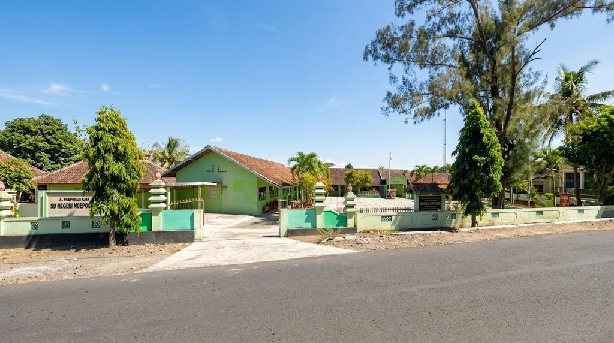
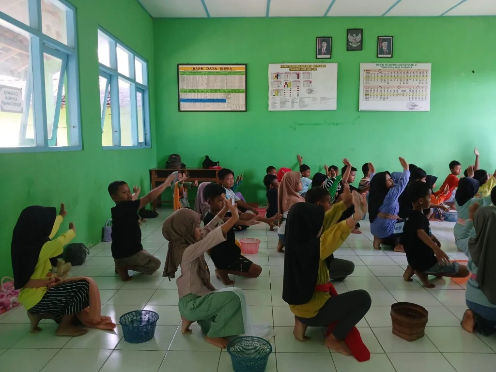
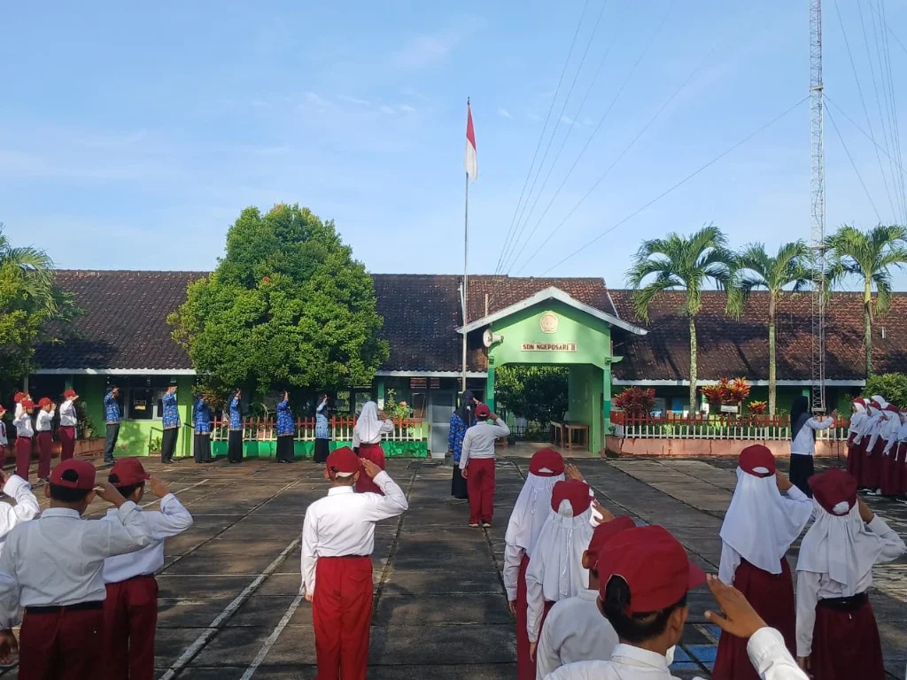
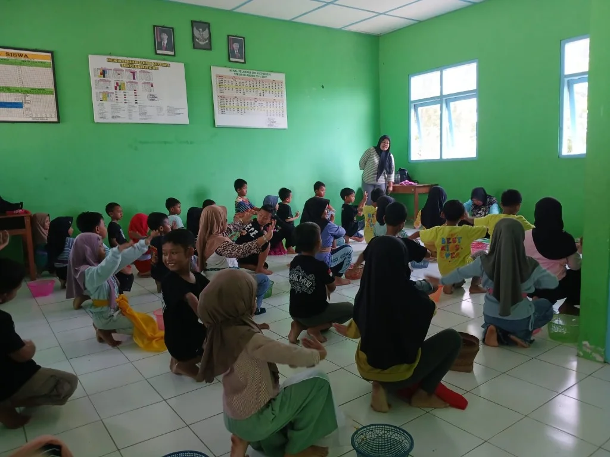

Akademik
Upacara bendera senin dan pembinaan karakter
Kegiatan rutin upacara bendera hari Senin untuk memupuk jiwa nasionalisme, patriotisme, dan kedisiplinan siswa.
Baca selengkapnya →SDN Ngeposari 2 adalah sekolah dasar negeri terakreditasi A di Mojo RT 01 / RW 13, Ngeposari, Semanu, Gunungkidul yang berkomitmen mencetak generasi cerdas, berkarakter, dan berbudaya lingkungan.

Mengenal lebih dekat lingkungan, kegiatan, dan orang-orang yang membentuk keseharian serta masa depan cerah anak-anak di SD Negeri 2 Ngeposari.
Assalamu’alaikum Warahmatullahi Wabarakatuh, Salam Sejahtera bagi Kita Semua.
Puji syukur kita panjatkan ke hadirat Tuhan Yang Maha Esa atas limpahan rahmat dan karunia-Nya. Selamat datang di portal informasi resmi SD Negeri 2 Ngeposari, Kapanewon Semanu, Kabupaten Gunungkidul. Website ini kami hadirkan sebagai jendela keterbukaan informasi, media komunikasi yang hangat, dan sarana silaturahmi antara sekolah, orang tua wali, serta masyarakat luas.
Kami meyakini bahwa setiap anak yang melangkah masuk ke gerbang sekolah ini membawa benih potensi dan mimpi yang berharga. Di lingkungan yang asri dan teduh ini, para pendidik berkomitmen mendampingi siswa dengan penuh kesabaran, memadukan pembelajaran bermakna Kurikulum Merdeka, pembiasaan budi pekerti luhur Pancasila, serta kecintaan terhadap kelestarian lingkungan hidup.
Mari bersama-sama bergandeng tangan membimbing putra-putri kita menyongsong masa depan yang cerah, cerdas, dan berkarakter mulia.

SD Negeri 2 Ngeposari adalah institusi pendidikan dasar negeri berakreditasi A yang berakar kuat di Dusun Mojo, Kalurahan Ngeposari, Kapanewon Semanu, Gunungkidul.
Kami percaya setiap anak berhak belajar dalam lingkungan yang aman, teduh, dan penuh rasa menghargai. Melalui perpaduan Kurikulum Merdeka, pembiasaan literasi harian, dan kepramukaan aktif, kami mendampingi siswa mengenali potensi dirinya secara mandiri dan berakhlak mulia.
Kenali Sekolah Selengkapnya →Fasilitas sarana dan prasarana yang mendukung pembelajaran interaktif, eksplorasi minat, dan kenyamanan seluruh siswa.

Koleksi buku lengkap mulai dari buku pelajaran, cerita anak, hingga ensiklopedia menarik.

Ruang komputer modern dengan koneksi internet untuk menunjang literasi digital siswa.

Area luas untuk kegiatan olahraga seperti senam, sepak bola, bulu tangkis, dan upacara bendera.
Dokumentasi kegiatan aktual, kepramukaan, pembiasaan baik, dan kabar sekolah terbaru.
Kegiatan rutin upacara bendera hari Senin untuk memupuk jiwa nasionalisme, patriotisme, dan kedisiplinan siswa.
Baca selengkapnya →Siswa-siswi antusias mengikuti latihan kepramukaan, simpul tali-temali, dan pembentukan jiwa kepemimpinan.
Baca selengkapnya →
PrestasiWadah ekspresi kreativitas dan pelestarian seni budaya daerah melalui ekstrakurikuler tari tradisi di kelas.
Baca selengkapnya →Potret keseharian, pembelajaran interaktif, dan kebersamaan di SD Negeri 2 Ngeposari.
DOKUMENTASI UTAMA
Lingkungan belajar yang sejuk, teduh, dan ramah anak di Kapanewon Semanu, Gunungkidul.
Pembelajaran
Suasana belajar aktif dan interaktif dengan bimbingan guru yang penuh dedikasi.
Ekstrakurikuler seni tari melestarikan kebudayaan dan menumbuhkan rasa percaya diri.
Pembinaan karakter disiplin, kemandirian, dan cinta tanah air sejak dini.
Literasi
Koleksi buku cerita dan ensiklopedia menumbuhkan rasa ingin tahu siswa.
 Adiwiyata
Adiwiyata
Budaya peduli alam dan penanaman tanaman apotek hidup di halaman sekolah.
Pengalaman nyata dan apresiasi hangat dari orang tua wali murid SD Negeri 2 Ngeposari.
"Guru-guru di SDN Ngeposari 2 sangat sabar dan penuh perhatian. Anak saya jadi lebih percaya diri, sopan, dan bersemangat berangkat sekolah setiap pagi."
"Fasilitas perpustakaan dan lab komputer sangat membantu anak-anak belajar teknologi secara sehat. Pembiasaan Pramuka-nya juga melatih kemandirian."
"Lingkungan sekolah yang bersih dan hijau membuat anak-anak merasa nyaman. Komunikasi sekolah dengan orang tua wali siswa juga terjalin sangat dekat."
Temukan alamat lengkap, kontak resmi, dan petunjuk arah lokasi SD Negeri 2 Ngeposari. Pintu kami selalu terbuka hangat untuk silaturahmi, konsultasi pendaftaran, dan kemitraan pendidikan.